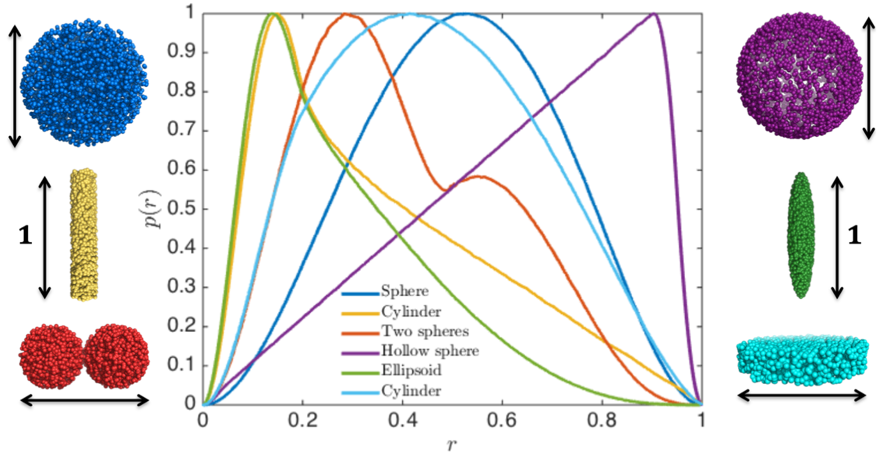
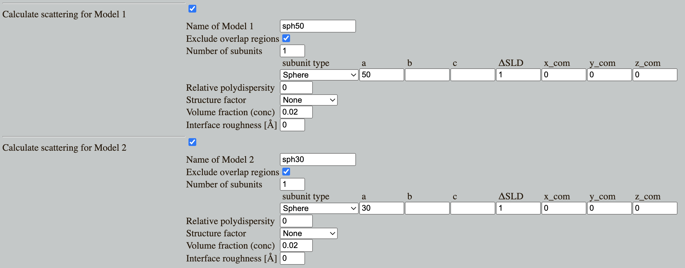
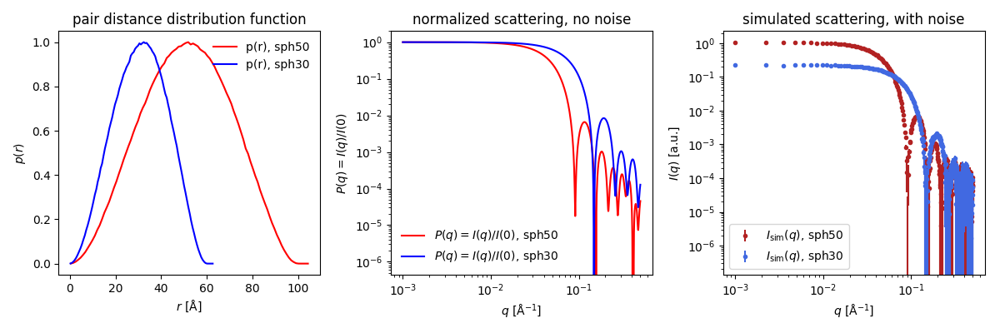
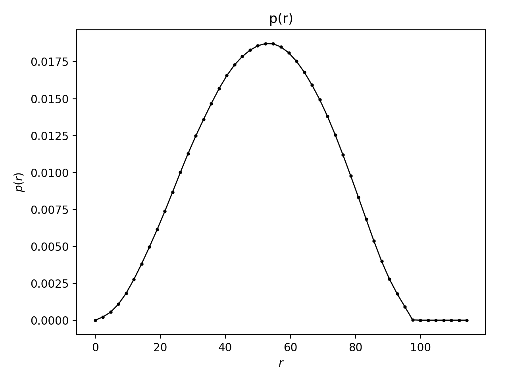
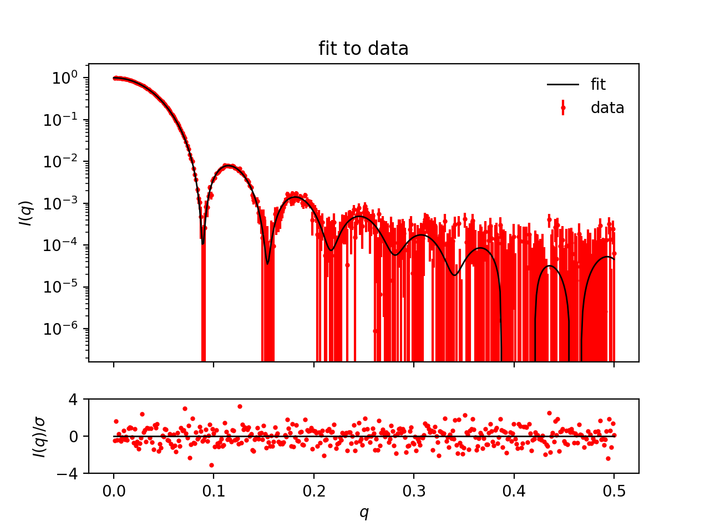
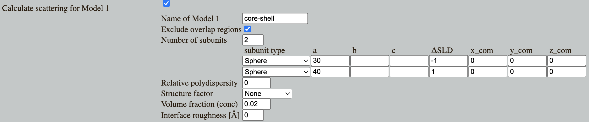
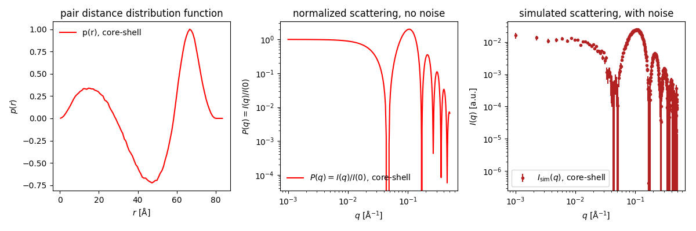
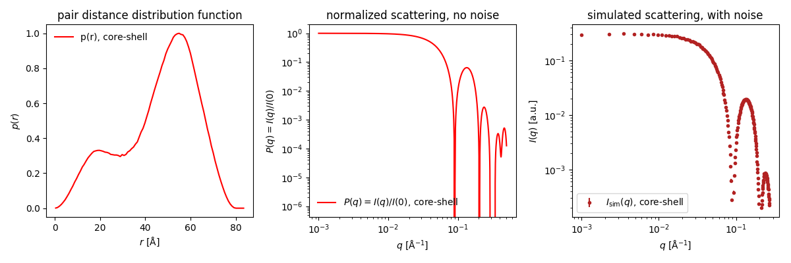
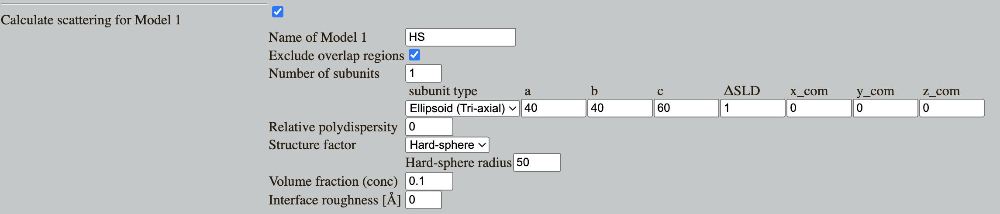
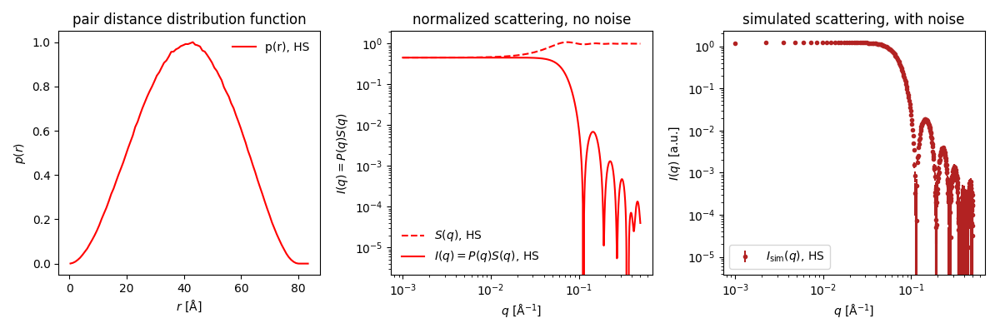

Home
Tutorial: Pair distance distribution, $p(r)$
Contributors: Andreas Haahr Larsen

The pair distance distribution for 3-dimensional structures, all with maximum dimension $d_\mathrm{max}=1$. Reprinted from Larsen, 2018 (PhD Thesis), with permission.
Learning outcomes
The ovall goal is to learn what a pair distance distribution is, and how is can be applied in the analysis of SAXS or SANS data.- Be able to generate the pair distance distribution, $p(r)$, from a SAXS or SANS dataset.
- Recognize geometrical objects from their $p(r)$.
- Mention circumstances can lead to a negative $p(r)$.
Introductory remarks
SAS data is measured in reciprocal space, i.e. as function of 1/length. By a Fourier transformation, one can get a distribution of distances between scattering pairs in the sample (weighted by contrast): the pair distance distribuion, $p(r)$ (colloquially denoted the "p-of-r-function").
The $p(r)$ is in real space, i.e. as function of length, so it can be interpreted more intuitively than the data itself, and the $p(r)$ thus provides structural information about the sample prior to any modelling.
This is a practical tutorial, but if you wish to get a better understanding of the theory of Fourier transformation, it is recommended that you work with the exercises at pan-learning.org, covering some simple examples.
SAXS or SANS data can generally not be Fourier transformed directly for the following reasons: (1) Data is measured in a limited range and not from minus infinity to plus infinity (2) Data is noisy. Therefore, the p(r) is generated by an Indirect Fourier transformation (IFT) .
Various IFT algorithms are implemented and can be accessed through different software packages. In this tutorial, we will use BayesApp.
Part 1: Recognizing shapes from the pair distribution, p(r)
Go to: Shape2SAS, and simulate a sphere with radius of 50 Å as Model 1 and a 30 Å sphere as Model 2.

Shape2SAS plots the $p(r)$ (left), the normalized scattering (middle panel) and simulated data (right panel):

You can immediately see that the red $p(r)$ represents the larger sphere (largest distance, $d_\mathrm{max}=100$) and the blue $p(r)$ represents the smaller sphere ($d_\mathrm{max}=60$). For spheres the largest dimension, $d_\mathrm{max}$, is their diameter.
For homogeneous particles (i.e., having the same contrast in the whole particle), $p(r)$ is the probability distribution of distances between pairs of scatterers in the particle. For spheres, the most frequent distance equals the radius.
Try to guess how the $p(r)$ look for an ellipsoid and or for a cylinder or an a hollow sphere. Calculate the $p(r)$ for these and other shapes using Shape2SAS.
Part 2: Calculating the pair distribution from SAXS/SANS data
Download the simulated data of the sphere with radius of 50 Å, which you generated with Shape2SAS, or use this example data.
Go to BayesApp, which is a web-application for generating p(r) for SAXS and SANS data.
Upload your simulated data, and press submit.
The program shows the calculated $p(r)$, and a fit to the data, which was used to generate this $p(r)$.


Give a rough estimate of the maximum distance (this does not have to be accurate) and press submit again. Giving an estimate of the maximum distance is optional, but makes BayesApp faster and more robust. Notice the computation time decreased.
Go to the SAS biological data bank (SASBDB), which is a database for SAXS and SANS data. Download the SAXS data of the protein Xylanase (SASBDB entry: SASDPS4): SASDPS4.dat.
Use BayesApp to calculate the p(r). To increase speed and robustness, provide a rough estimate of the maximum distance - it does not have to be precise.
Notice that the $p(r)$ looks like the $p(r)$ from a sphere, meaning the protein is globular (approximately spherical). See the actual shape of the protein in the SASBDB entry.
Now, do the same for an elongated protein, SASBDB entry: SASDTE2.
Notice how the $p$(r) is closer to that of a cylinder or elongated ellipsoid. This way, by looking at the $p(r)$, one can get an immediate idea of the shape of the particles without model fitting.
Part 3: Inhomogeneous particles
The p(r) is a contrast-weighted pair distribution (contrast = ΔSLD = excess scattering length density). I.e. each bin in the distribution is the weighted sum of all pairs with a given distance.
Therefore, if a pair of scatterers have contrasts with the same sign, then they contribute positively, but if the signs are opposite, then their contribution to the p(r) is negative. This means that the p(r) can have negative values.
Go to Shape2SAS, and simulate a core-shell spherical particle with inner radius 30 Å and outer radius 40 Å and with core ΔSLD of -1 and shell ΔSLD of +1


- Negative contribution comes from scattering pairs with ΔSLDs having opposite signs. Likewise, positive contributions comes from pair having the same sign (either both positive or both negative ΔSLD). Using this information, consider:
- What scattering pairs in the core-shell particle does the negative part of the p(r) represent?
- Why are pair distributions (including this one) positive as small values of r?
- Why is this $p(r)$ positive at larger $r$?
Download the simulated data (example data) and upload it to BayesApp. Give an estimate of the maximum distance and press Submit.
By default, the p(r) is constraint to be positive. (Transformation: Debye). Now, try to rerun with Tranform: Negative (i.e. p(r) can be negative.) Is the result better?
Compare with the true p(r), which was simulated in Shape2SAS.
Note that inhomogeneous particles do not always give rise to p(r) with negative contribution. Try, for example, simulating a core-shell spherical particle with core radius of 20 and ΔSLD of -1 and shell radius of 40 and ΔSLD of +1.

In this case, the negative contribution from core-shell scatterer pairs is cancelled out by positive contributions from shell-shell scatterer pairs having the same distance.
Part 4: Interparticle interactions
Negative contribution in the $p(r)$ may also stem from interparticle interactions. This can appear if the concentration is high.
Go to Shape2SAS, and simulate an ellipsoid with axes 40,40 and 60 Å. Add interparticle interaction, modelled with a hard-sphere structure factor with hard sphere radius of 50 and volume fraction 0.1.


The $p(r)$ in Shape2SAS is calculated before the structure factor, therefore it contains no negative contribution.
Download this simulated data (or download this example data) and generate the $p(r)$ using BayesApp. Try with positive restraint (Transformation: Debye) or without (Transformation: Negative).
Challenges
- The protein bovine serum albumin (BSA) was measured with SAXS. Data: bsa_hc_030.dat. BSA is a common blood protein. The sample was measure with SAXS at relatively high concentration. Generate the $p(r)$ - what does it tell you about the shape of BSA?
- A sample of discoidal particles (diameter ca 5 nm, as estimated from negative stain electron microscopy) was measured in SAXS at neutral pH (neutral pH data) and pH 5.0 (low pH data). Using the $p(r)$, describe the pH-induced structural change?
Feedback
Help us improve the tutorials by- Reporting issues and bugs via our GitHub page. This could be typos, dead links etc., but also insufficient information or unclear instructions.
- Suggesting new tutorials/additions/improvements in the SAStutorials forum.
- Posting or answering questions in the SAStutorials forum.